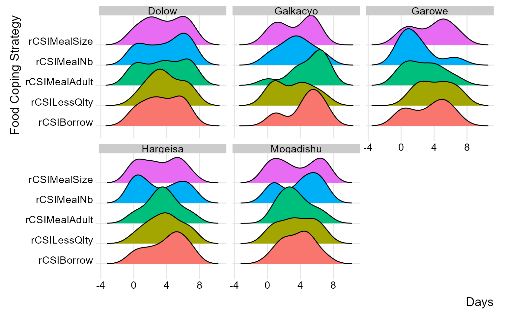
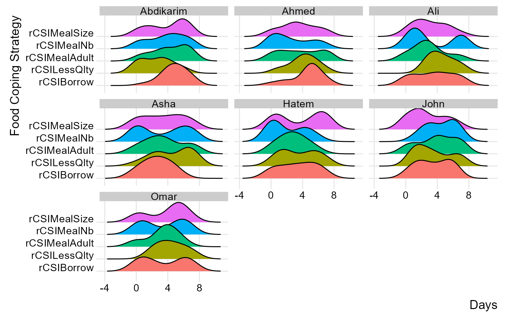

Cleaning Food Security Indicators
Source:vignettes/Cleaning_FSL_Indicators.Rmd
Cleaning_FSL_Indicators.RmdWelcome to the cleanR package documentation! This guide is designed to assist the WFP team in cleaning food security and livelihood data using the cleanR package. Our goal is to streamline the data cleaning process, ensuring consistency with the WFP Survey Designer for standardized variable naming.
Step 1: Load data
Start by uploading the raw data, typically the version downloaded from the MoDa server. Ensure that the data structure aligns with the WFP Survey Designer for consistent variable naming.
Step 2: Format data
The calculate_fsl_indicators function is a powerful tool for computing essential food security and livelihood (FSL) indicators, including the food consumption score, household dietary diversity, reduced coping strategy, and livelihood coping strategy, from your raw data.
raw_data <- calculate_fsl_indicators(data = moda_data,
# FCS
FCSStap = "FCSStap",
FCSPulse = "FCSPulse",
FCSPr = "FCSPr",
FCSVeg = "FCSVeg",
FCSFruit = "FCSFruit",
FCSDairy = "FCSDairy",
FCSFat = "FCSFat",
FCSSugar = "FCSSugar",
cutoff = "Cat28",
# rCSI
rCSILessQlty = "rCSILessQlty",
rCSIBorrow = "rCSIBorrow",
rCSIMealSize = "rCSIMealSize",
rCSIMealAdult = "rCSIMealAdult",
rCSIMealNb = "rCSIMealNb",
# HHS
HHhSNoFood_FR = "HHhSNoFood_FR",
HHhSBedHung_FR = "HHhSBedHung_FR",
HHhSNotEat_FR = "HHhSNotEat_FR",
# HDDS
# HDDSStapCer = "HDDSStapCer",
# HDDSStapRoot = "HDDSStapRoot",
# HDDSVeg = "HDDSVeg",
# HDDSFruit = "HDDSFruit",
# HDDSPrMeat = "HDDSPrMeat",
# HDDSPrEgg = "HDDSPrEgg",
# HDDSPrFish = "HDDSPrFish",
# HDDSPulse = "HDDSPulse",
# HDDSDairy = "HDDSDairy",
# HDDSFat = "HDDSFat",
# HDDSSugar = "HDDSSugar",
# HDDSCond = "HDDSCond"
)Step 3: Use visualizations
By incorporating ridge charts into your analysis, you can easily identify patterns and variations in FCS and rCSI across different clusters or field monitors.
(plot_ridge_distribution(raw_data, numeric_cols = c("FCSStap", "FCSPulse", "FCSPr", "FCSVeg", "FCSFruit", "FCSDairy", "FCSFat", "FCSSugar"),
name_groups = "Food Groups", name_units = "Days", grouping = "Area_Office"))
By carefully examining and interpreting the ridge chart, you can gain valuable insights into the distributions and flag any inconsistency for validation and review during data collection. in the below chart, we’ll group the reduced coping strategies at area office level.
(plot_ridge_distribution(raw_data, numeric_cols = c("rCSILessQlty", "rCSIBorrow", "rCSIMealSize", "rCSIMealAdult", "rCSIMealNb"),
name_groups = "Food Coping Strategy", name_units = "Days", grouping = "Area_Office"))
similarly, you can group distributions at field monitor level to gain more insight at the consistency of reported distributions across different monitors.
(plot_ridge_distribution(raw_data, numeric_cols = c("rCSILessQlty", "rCSIBorrow", "rCSIMealSize", "rCSIMealAdult", "rCSIMealNb"),
name_groups = "Food Coping Strategy", name_units = "Days", grouping = "EnumName"))
Step 4: Generate cleaning log file
To facilitate collaboration and feedback collection, generate a cleaning log file. This log file will document flagged issues, providing insights into potential problems and capturing correct values for any identified inconsistencies.
fsl_clog <- fsl_cleaning_log(data = raw_data, uuid = "uuid")
datatable(fsl_clog, list(dom = 't'))Congratulations on generating the cleaning log! To proceed, refer to the other documentation for incorporating the corrected cleaning log file into the raw data to generate the clean data.